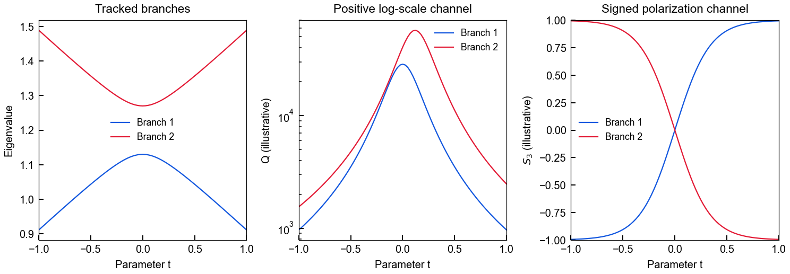
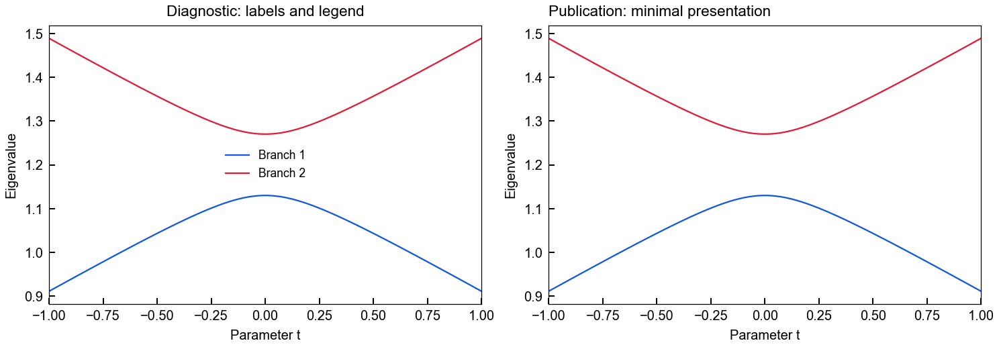
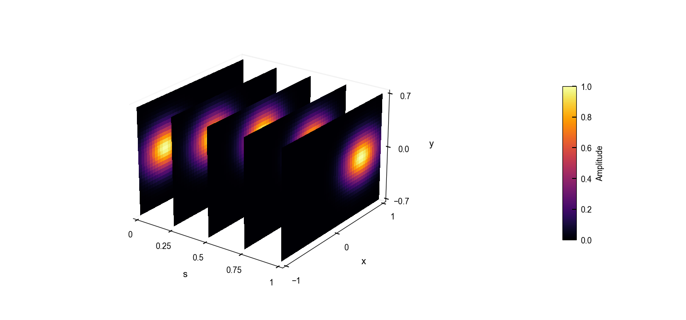
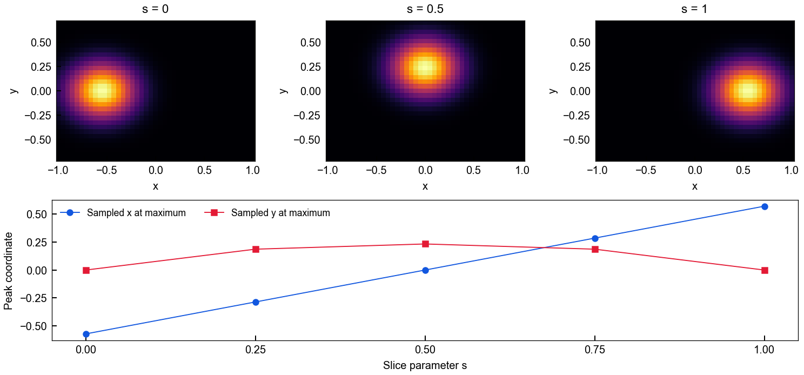

Computed synthetic examples · software demonstration · no experimental or full-wave evidence.
All axes are dimensionless. The two synthetic branches are 1.2 ± sqrt((0.28t)²+0.07²). Q and S3 are independent illustrative channels, not inferred from the eigenvalues. Five Gaussian slices are sampled at s=0,0.25,0.5,0.75,1; there is no dense volume or interpolation between slices. Color on slices is amplitude in [0,1]. Maxima are discrete sample maxima, not mode identities. Workflow surface payloads are y-first and are transposed once by the adapter into foundation x-first specs.
Provenance and checks · Runnable source · README

All panels use the same tracked parameter path and branch colors; Q and S3 are independently defined example observables.
PNG · SVG
The workflow maps diagnostic and publication_minimal profiles into specs. Essential labels are explicitly restored for this standalone gallery; numerical values are identical.
PNG · SVG
Physical slice positions are retained. Each plane shows only its own grid, with a shared [0,1] color scale; no volume is inferred.
PNG · SVG
Three of five raw slices are shown above; all five sampled maxima are shown below. Connecting segments guide the eye and do not add sampled data.
PNG · SVG